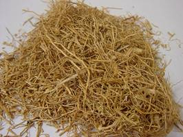

HORT 282 :: Lecture 11 :: VETIVER (KHUS)

VETIVER (KHUS)
(Vetiveria zizanioides, Poaceae)
 Vetiver oil is obtained by steam distillation of roots of vetiver (Vetiveria zizanioides). The oil is one of the finest oriental perfumes with a persistent fragrance. The oil is used in the manufacture of soaps, cosmetics, perfumery, agarbathis, soft drinks; pan masala etc. In blended perfumes, oil of vetiver acts as excellent fixatives for volatile compounds. It is known for its cooling properties. It grows well in wastelands-sandy, marginal land where conventional cropping is uneconomic. Vetiver is extremely hardy and can tolerate submergence for a considerable period as well as withstand drought situation. Cultivation of vetiver for 3-4 cycles improves sandy soils to a greater extent and makes them suitable for growing common agricultural crops more profitably.
Vetiver oil is obtained by steam distillation of roots of vetiver (Vetiveria zizanioides). The oil is one of the finest oriental perfumes with a persistent fragrance. The oil is used in the manufacture of soaps, cosmetics, perfumery, agarbathis, soft drinks; pan masala etc. In blended perfumes, oil of vetiver acts as excellent fixatives for volatile compounds. It is known for its cooling properties. It grows well in wastelands-sandy, marginal land where conventional cropping is uneconomic. Vetiver is extremely hardy and can tolerate submergence for a considerable period as well as withstand drought situation. Cultivation of vetiver for 3-4 cycles improves sandy soils to a greater extent and makes them suitable for growing common agricultural crops more profitably.
Demand and Supply of vetiver oil
In India as well as the World Market, the demand for vetiver oil is increasing day by day due to its unique odour, for which it is used in both flavour and fragrance industries. One more reason for increase in demand is that this oil cannot be substituted with reconstituted oil and cannot be made synthetically. It is used for Base-note in flavour and fragrance and the percent usage varies from 20-50% to 60-70 %. That means it has enough market potential and there is no doubt on its consumption. The internal demand particularly of Northern type oil always falls short of supply. The world production of vetiver oil is around 300 tons per annum of which India contributes about 20-25 tons. Haiti, Indonesia (only Java), and Reunion produce most of the world’s vetiver oil. In India it is cultivated in the states of Rajasthan, Uttar Pradesh, Karnataka, Tamil Nadu, Kerala and Andhra Pradesh, with an annual production of about 20 tons of oil. Its demand for perfumes, essence, attar, soap and also as food flavour etc is greater than indigenous production. Quantity wise the Indian vetiver oil, especially North Indian origin is considered to be the best in the world market. The Indian consumption at present is about 100 tons and more than 80 % is met by import.
The vetiver oil from North Indian origin is considered to be the best in the world market.
Improved varieties
KS-1 (Bharatpur type) an improved selection released by CIMAP is recommended for commercial cultivation in Assam. Other improved varieties are Gulabi, Dharaini and Kesar.
Soil and Climate
Vetiver grows in any type of soil but a rich and fairly well drained loam is considered best. The loamy soils, which are loose in texture, are ideal for root growth and harvesting as well. Vetiver plant also grows on a variety of problematic soils like waterlogged soils, sandy soils and areas with high water table and flood prone. A luxuriant growth of healthier root is obtained from plants growing under warm and damp conditions on rich, temporary inundated, marshy land. The Charlands of The Brahmaputra and its main tributaries and newly silted land that turned otherwise unfit for most common agricultural crops may be identified as potential areas for vetiver cultivation. It grows best in areas with warm summer and well-distributed rainfall.
Propagation
Vetiver can be propagated by tillers and slips. Tillers take longer time for growing and therefore, slips are the better planting material for propagation. Preferably it is propagated by slips. Plants are cut at 25-30 cm above ground and dug out for preparation of slips. The culms are divided into slips with 2-3 tillers. These slips are jabbed into ground like seedling. Although the growth may be slow initially, the plants develop quickly once roots are established. The plant responds to fertilizers and irrigation with massive tillering, and each tiller can be broken off and planted.
Raising of initial nursery
A nursery should be set up preferably on light soil so that plants can be pulled up easily. For quick multiplication, nursery should be manured liberally by FYM or Compost @20-25 t/ha. DAP @75 kg/ha may also be applied at the time of planting to encourage fast tillering the slips in the nursery should be planted at 30 x 30 cm apart. After second weeding urea @ 60 kg/ha may be top dressed. The multiplication rate could be about 80-100 in two steps a year. Nursery raised on 300-400 sq. m area may be sufficient for 1 hectare area within 6 months.
Land preparation
Vetiver field should be free of perennial weeds and shrubs. After clearing, the land is deep tilled. With the onset of pre-monsoon shower final land preparation is done.
Field layout and bed formation
For uniform cropping and higher root yield the fields are laid out into beds of convenient size.
Planting time
With pre-monsoon shower April- August is considered most ideal time for commercial cultivation. In flood affected areas the crop should be established before floodwater submerges it. Therefore, it should be planted before 2 months ahead of normal flood.
Planting
After division into slips the fibrous roots are also removed leaving 5-8 cm from the base of the root. These are planted in lines at 45 x 30 cm spacing. Flat bed planting followed by ridging (after 30 days of planting) produces higher roots and essential oil. Planting is done in holes 5-8 cm deep. The soil around the slips is pressed firmly and leveled. From an average sized clump about 20-30 healthy slips can be obtained. One-hectare area requires about 75,000 slips when planted at 45 x 30 cm spacing. If planting is done during rain free period, field should be irrigated immediately after planting.
Manuring and fertilization
In poor soils 40kg each of nitrogen, phosphorus and potassium per acre is applied before final ploughing. In second year of crop growth 40 kg nitrogen is top-dressed after rain in June. In the first year depending on soil fertility and crop growth 20 kg N may be top-dressed at about 4 months after planting. Depending on availability, the crop may be given 10-12 t/ac FYM or compost at planting supplemented with urea one month after planting to stimulate growth.
Fertilizer requirement per crop cycle (18 months)/hectare
A fertilizer dose of 100 kg N, 40 kg P2O5 and 40 kg K2O per hectare is recommended.
In fertilizer form
Basal application:
Urea 90 kg
Single super phosphate (SSP) 250 kg
Muriate of potash (MOP) 67 kg being transplanted
Top-dress (after 4 months of planting)
Urea 45 kg
In second year
During June Urea 87 kg
Intercultural operations
Initial growth of vetiver for first 60-70 days is very slow, hence inter row space virtually remain vacant allowing infestation and faster growth of kharif weeds which compete with crop plants for light, moisture and nutrients. 2-3 weedings at an interval of about a month are needed during the initial period of growth. In the second year one weeding is done before harvest to facilitate the harvesting and avoid of any root of weeds getting mixed with roots of the crop.
Use of herbicides
Herbicide Atrazine @ 0.5 kg a.i/ha (50% a.i) as pre emergence to weed and before transplanting gives a weed free condition for first 75-90 days, after which the crop is able to cover the ground surface.
Earthing up Vetiver after shoot cutting
Earthing up after weeding is beneficial to the crop. Earthing up encourages root growth at the crown due to better rhizospheric environment provided to the growing plants.
Shoot cutting
The cutting of aerial portion with commencement of winter (November) increases tillering and consequently gives more roots per plant. Shoot cutting is done twice during the crop cycle. First shoot cutting is done at 30 cm height in planting year to achieve regeneration for second year, while second time cutting is done at 15-20 cm height before harvesting to facilitate digging of roots.
Inter cropping
Vetiver slips are planted in rainy season at a spacing of 45 x 30 cm. The crop growth in initial stages is very slow and inters row space remains free for weed infestation, which grow at a faster rate and compete with crop plants for moisture and nutrients. The open space can be used efficiently for raising intercrop without affecting the main crop yield. Growing of early maturing pulses like green gram, black gram, cluster bean (French bean) in kharif and toria and corianderin the subsequent rabi season found to improve the productivity and also give higher net profit per unit time and space. Cowpea, Dhaincha seed can be sown in the row spaces and incorporate them after 50-60 days of growth as green manure. This will add organic matter, which ultimately is helpful for better root growth.
Planting on paddy field leaves
Vetiver grows well on the field levees, which can keep them stabilized. To avoid shading effect the foliage can be trimmed time to time. If planted in July – August with Sali rice, the root will be ready for harvest in second year Nov-Dec i.e., just after harvest of second crop.
Precaution
Vetiver by its nature grows best by the riverside. The economic part of the crop is its dug up roots upto a depth of 30-40 cm. Therefore, under any situation vetiver for its root production should not be undertaken in areas where soil erosion is a common feature. Though it can be grown even in erosion prone land with proper control measure, harvesting should be restricted to the central area of the standing crop, leaving thick, hedge like boundary line totally undisturbed.
Diseases and pests
Black scale insect
The black scale insects rarely move, the young nymphs settle and insert their mouthparts. They suck the sap of the plant and the growth is checked and vigour is reduced, ultimately the plant may die. Spraying of metasystox @ 0.04% will be effective to control the scale insect.
Harvesting
Harvesting is done in between 15-18 months to get fully developed root system and high quality of oil. Harvesting earlier than 15 months after planting, the immature roots yield oil of poor quality with green earthy odour. Properly developed somewhat thicker roots, yields an oil of better quality and its optical rotation and specific gravity are higher, the odour fuller, richer, more lasting. Oils derived from older roots are usually of darker colour than the oils distilled from the younger roots. If the roots stay in ground for over two years, the yield of oil diminishes considerably as the root system tend to become woody and lose in essential oil content and the oil becomes very viscous with a dark colour but of high quality.
In general the crop is harvested after 15-18 months during the dry season from December to February for best quality oil. Oil content of root starts decreasing after20 months age considerably. For harvesting, the moist areas are taken up first. The water logged areas become dry enough in February for digging up the roots. After February due to rising temperature, the soil become harder and makes digging very difficult. At this stage the finer roots stay in the ground, which contain more oil resulting low yield per unit area.
Characteristics to determine correct harvesting age
The roots that possess the following characteristics have good oil content. It should
1. Expose a hard surface when the skin is peeled off
2. be thick, hard, long and wiry and
3. Give a very bitter taste when chewed
Digging
The stem portion is cut at a height of 15-20 cm and the clumps are uprooted. About 50-60 % of the roots come away with the clump when dig out by spade or tractor drawn single disc leaving the rest in the soil. The clumps are beaten on a piece of log to remove earth adhering to the roots and the roots are separated from the plants with a sharp knife. As far as possible, re-digging the soil also collects the roots left in the soil. One irrigation may be given before harvesting to facilitate digging if available. For mechanical harvesting a disc plough with single disc mounted on a tractor can be used which uproot the roots from 30-35 cm depth. This process saves manpower and also gives about 15 % higher root recovery over manual digging. The length of the roots varies from 10-35 cm according to the condition of growth, soil, climate etc of the locality. Thicker roots produce more oil. Very light or almost white roots contain very little oil.
Washing / Cleaning
The harvested roots contain large quantities of earth sticking to them. Immediately after harvest, the roots are washed gently in clean running water to remove the adhering earth taking care so that the finer roots are not lost.
Drying
 The cleaned roots are spread on drying grounds. The roots are turned over at regular intervals until dry. During this process foreign matter if any is removed from the mass. The cleaned and dried roots are sent to distillery or storage shed where they are allowed to mature. Drying is done under shade for 1-2 days, which improves the olfactory quality of the essential oil. Prolonged drying in the sun reduces the oil yield. Dry roots can be stored in shade for 60-70 days without loss of oil but quality improves appreciably.
Yield of roots
The age, the soil, climatic conditions and also the strain are important factors governing the yield of roots. On an average, 30-45 q/ha of dry root is obtained under good management. At 0.4% average recovery the oil yield of 12-20 kg oil/ha may be obtained.
Distillation
The essential oil is extracted from the roots by steam distillation. Freshly harvested roots on distillation give higher yield of oil than stored roots; the yield decreases progressively with the period of storage. The roots are soaked for 18-20 hours in water prior to distillation to render the root material soft and thereby further facilitate release of oil. Fresh roots when cut to lengths 2.5 cm – 5 cm increases recovery. As the most valuable quality constituents are contained in the high boiling fractions, the roots must be distilled for a prolonged period ranging from 20-24 hours. North Indian varieties yield 0.4 to 0.8 of oil. During distillation two fractions-lighter and heavier oils are obtained. In the start highly volatile lighter fraction released first and a considerable amount of which may escape before it gets cooled and collected in liquid phase. To avoid this loss a piece of marking cloth after cleaning is tied at delivery outlet in the swollen balloon shape in the receiver keeping it submerged in water. The lighter fraction that is likely to escape along with the steam/gas or running distillate water would be trapped in the cloth. As the distillation progress the heavier fraction will get deposited in the cloth and the lighter will pass through cloth and get collected in the receiver. At the end of the distillation the cloth is squeezed to get the oil. This piece of cloth is repeatedly used till tear off. Before thrown off, the cloth may be washed by diethyl ether (solvent) to get back the adhering oil. This practice helps in increased recovery of oil. Traditionally copper vessel with S.S condenser is found good for vetiver since the oil react with free copper turns bluish in colour which fetches more prices in perfumery market. The traditionally distilled oil which often called “Ruhe khus” done in Kannauj type “Deg Vopka” although recovery is comparatively low fetches the highest price in perfumery market.
Quality aspects
Distillation technique plays an important role in oil quality. By adopting the right steam pressure and by adjusting the post harvest treatment of roots, yield as well as quality can be improved. There are hundreds of small constituents in vetiver oil. However, the ‘Khusimol’ content in oil, minimum of which should be 14% or more and low in caryophyllene. Besides extraction procedures the oil quality is governed by varietal selection, harvesting at proper age (15-18 months) and during dry period only.
Bi-products
Roots left after oil extraction is used for making cartons and many handicrafts items like Mats, Aasa (for sitting), pen-stand etc. A simple sharbat (syrup) can be prepared by using water obtained during distillation, which on analysis found to be tasty and best for health also.
The oil and its Uses
The oil is used extensively in perfume industry and in the manufacture of scented toiletries as fixative and also as odour contributor in base etc. It also has uses in the food industry as flavour agent. The essential oil is reddish dark brown when matured and has a woody, earthy smell that is almost musty. The oil has a strong odour (that may not be to everyone’s taste) and should be well diluted to avoid it being too overpowering in a blend. Vetiver oil is used as part of the woody notes for luxury perfumes. The oil of vetiver, patchouli and sandalwood in combination with jasmine and gardenia complex, is the base of the famous Crepe de Chine note. In addition to its importance in classical perfumery, vetiver oil is also used as base for many modern men’s colognes.
Medicinal uses
Therapeutically, vetiver oil has a profoundly relaxing effect on the nervous system, relieving tension and stress. It can be used to good effect in the treatment of insomnia. In India, vetiver oil is known as the oil of tranquility. In baths or in massage, vetiver is beneficial in the treatment of the symptoms of disorders such as arthritis, rheumatism and a chin, stiff muscles. It is warming and comforting and will help to relieve the tension that is often associated with chronic pain. Vetiver oil also benefits the circulatory system, stimulating and warming, especially when used in combination with massage. In skin care, the antiseptic and slightly astringent properties of vetiver can be used to good effect in the treatment of oily skin that is prone to spots.
***********
- Vetiver belongs to the family ___________
- Vetiver grass is a native of _____________
- Two main types of the vetiver grass is __________ and _________
- What are the three different systems of planting adopted by different growers?
- Vetiver can be propagated through _____________ & __________
| Download this lecture as PDF here |